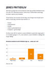

FP9 Dansk, skriftlig fremstilling
Du skal vælge en af disse opgaver:
1 Et nyt liv på en anden planet
2 Fritidsliv
3 En vigtig beslutning
4 Influencere
Du skal skrive den valgte opgaves nummer og titel på din besvarelse.
1 Et nyt liv på en anden planet
2 Fritidsliv
3 En vigtig beslutning
4 Influencere
Du skal skrive den valgte opgaves nummer og titel på din besvarelse.
Før du skriver
Til eleven
Til denne prøve i skriftlig fremstilling har du adgang til internettet.
Du må ikke kommunikere eller dele dine dokumenter med andre under prøven.
Nogle af opgaverne kræver, at du skal søge informationer på internettet til brug for din besvarelse. I andre opgaver er det en åben mulighed at søge fakta og inspiration.
Layoutet af din besvarelse indgår i vurderingen. Tænk derfor på, at du ud over tekst kan inddrage fx billeder og andre grafiske virkemidler.
Hvis du i din besvarelse anvender informationer, citater, billeder eller andre grafiske virkemidler hentet fra internettet, skal du til sidst i besvarelsen angive de væsentlige kilder.
Din besvarelse vurderes på både indhold, sprog og form. Se vurderingskriterierne nedenfor.
God arbejdslyst!
Vurderingskriterier til eleven
Der gives én karakter baseret på en helhedsvurdering af tre dimensioner: indhold, sprog og form
| Vurderingens tre dimensioner | Vurderingskriterier | Forklaring |
| Tekstens indhold | Opgavens krav | I hvor høj grad opfylder din besvarelse de krav, der er stillet i opgaven? |
| Genre og fremstillingsform | I hvor høj grad viser din besvarelse sikkerhed i at skrive i opgavens fremstillingsformer og i at anvende eventuelle genrekarakteristika? | |
| Disponering | I hvor høj grad er din besvarelse hensigtsmæssigt disponeret, hvad angår indholdets sammenhæng og rækkefølge? | |
| Relevans | I hvor høj grad er din besvarelse relevant og dækkende i forhold til tekstens hensigt, målgruppe og situation? | |
| Anvendelse af internettet | Hvis du har anvendt internettet til at søge inspiration eller information, vurderes det, hvordan og i hvor høj grad du kritisk har bearbejdet, anvendt og gjort det søgte til dit eget i din besvarelse | |
| Kildeliste | Hvis du har anvendt internettet, vurderes det, i hvor høj grad de væsentligste kilder er angivet korrekt i besvarelsen. | |
| Tekstens sprog | Sprog | I hvor høj grad er sproget i din besvarelse forståeligt, klart, varieret og tilpasset tekstens hensigt både med hensyn til ordforråd og syntaks? |
| Korrektur | I hvor høj grad er der i din besvarelse anvendt korrekt stavning, og er din tegnsætning sikker? | |
| Tekstens form | Layout | I hvor høj grad fremmer dit layout kommunikationen i forhold til det medie og den genre, du skriver i? |
1 Et nyt liv på en anden planet
Klik og se filmen:
Kilde: planetarium.dk
De seneste århundreder har gjort det tydeligt, at der måske findes katastrofer, der kan udrydde alt liv på vores planet.
Derfor er det måske ikke en fjern tanke, at vi mennesker på et tidspunkt har ødelagt alt i en sådan grad, at vi hverken vil eller kan bo på Jorden mere. Det næste skridt kunne være at kolonisere andre planeter.
På din skole er der temauge med overskriften: Et nyt liv på en anden planet. På 9. årgang har I fået opgaven med at skrive fortællinger til unge. Alle fortællingerne samles til en antologi, når temaugen er omme.
|
Skriv en fortælling om at leve på en anden planet.
Som forberedelse til din tekst har du set filmen ovenfor som inspiration. I din tekst skal du:
|
2 Fritidsliv
Kilde: børnerådet.dk
Det nye børne- og ungeudvalg i din kommune vil gerne høre om unges tanker og holdninger til unges fritidsliv. Formålet er, at kommunen i højere grad vil imødekomme de unges ideer, ønsker og behov.
I den forbindelse opretter kommunen en blog om temaet. Du vælger at bidrage med et indlæg.
Klik på ikonet herunder, og læs om unges fritidsliv i Børnerådets rapport fra 2019.
|  |
|
Skriv et indlæg på kommunens blog.
Som forberedelse har du læst uddraget fra Børnerådets rapport. Du skal nu søge yderligere oplysninger om vigtigheden af, at unge har et godt fritidsliv. Du skal inddrage denne viden i din tekst. I dit blogindlæg skal du:
|
3 En vigtig beslutning
Foto: mariannenygaard.com
En landsdækkende avis har opfordret læserne til at skrive essays om deres livs vigtigste beslutning. Teksterne skal sætte tanker i gang hos andre unge over deres valg i livet.
Du vælger at følge denne opfordring og indsender dit bidrag.
Klik på ikonet herunder, og læs teksten.
|
Du skal skrive to tekster: et essay om en vigtig beslutning i dit liv og et kort følgebrev.
Som inspiration til dine tekster har du læst et uddrag af Susie Haxthausens essay “Jeg orkede ikke at være offer. Så jeg fløj på ham og knaldede ham en lussing”. I dit essay skal du:
Du skal give dit essay en titel. I dit følgebrev skal du:
|
4 Influencere
Foto: dr.dk/Scanpix
Ældresagen har bedt dig om at skrive en artikel til deres månedsmagasin Aktiv om influencere.
Formålet med artiklen er at gøre magasinets målgruppe klogere på influencere, og på hvordan man som ung forholder sig til dem.
|
Skriv en artikel til magasinet Aktiv.
Som forberedelse til din tekst skal du søge oplysninger om influencere og inddrage denne viden i din artikel. I din artikel skal du:
|